In this section, we will be gathering data from Portal which is a Transportation Data Archive for Portland-Vancouver. The website can be reached at the following
http://new.portal.its.pdx.edu:8080/downloads/
We will be downloading the following
Highways Stations Metadata Detector Metadata
Make sure that the features selected for download match the images below
- Select start and End date
- Select Days of the week from "Monday to Friday". Note that the selected days are highlighted or displayed in dark shade
- Select all highways. You can do this by clicking on one of the highways from the list and the do a Ctrl+A
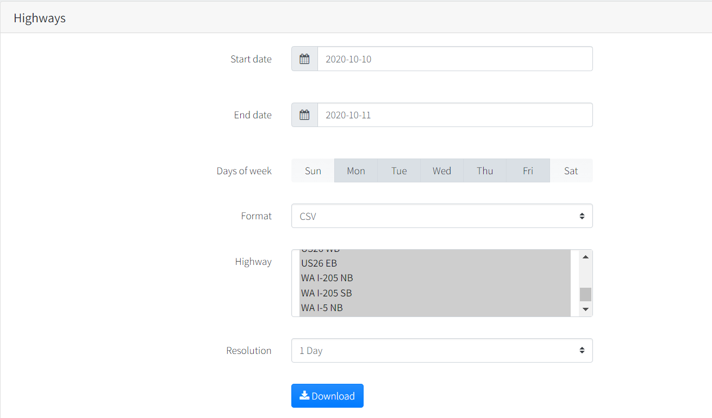
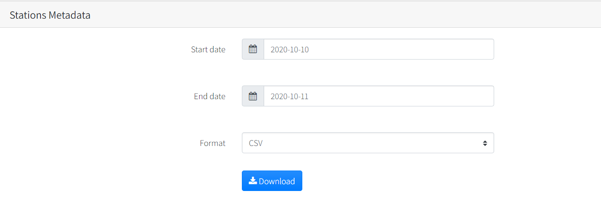
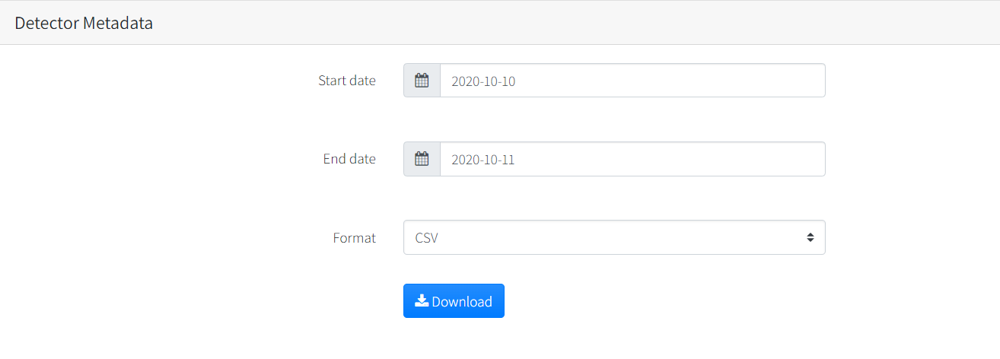
You should have three datasets named
highway_data.csv station_metadata.csv detector_metadata.csv
You can read the documentation on Portal about what each of these datasets mean if you are interested, however it is not necessary to know it for this codelab. The reason for using these datasets is that it is a good example of how data cleaning can be used on multiple common datasets. The downloaded datasets aren't large and therefore can all be done on your local machine. However, the objective here is to gain experience. You're encouraged to work with larger datasets if you like (since that is what you would use a cluster of machines for) but keep in mind that it may take longer to download, clean, and query.
These particular datasets have common attributes that connect all three. The highway dataset and detector_metadata dataset share a detectorid column. The detector_metadata dataset also shares a column with stations_metadata which is the stationid.
The stations_metadata dataset has coordinates that we can use to map the highway dataset onto a data visualization tool like Tableau for further analysis. You can also query for specific coordinates using BigQuery to find highway data based on those coordinates which we will do later in this manual.
The goal of this manual is to gain experience gathering "dirty data" and use cloud technologies to clean that data into a format that we can work with.
In the subsequent sections, we will clean the data by removing unnecessary attributes from the station and detector datasets. We will then join all three datasets to create one highway dataset that includes the needed coordinates.
Google Cloud Storage is an object storage that can store any amount of data. This will be used to retrieve the data from when we run out PySpark script on the machine cluster.
More information on cloud storage can be obtained here: https://cloud.google.com/storage
Sign into the google cloud console and select on the project above
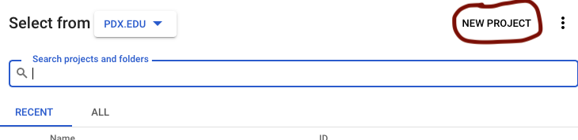
Create a new project
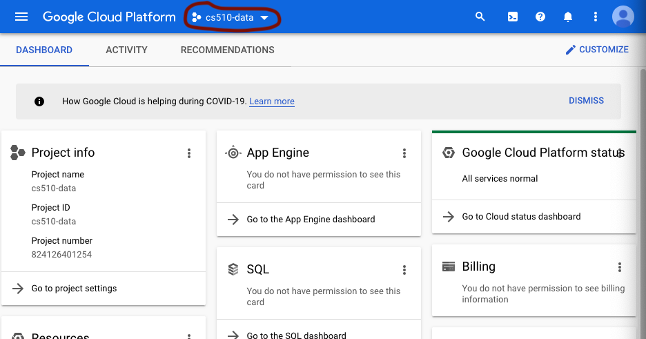
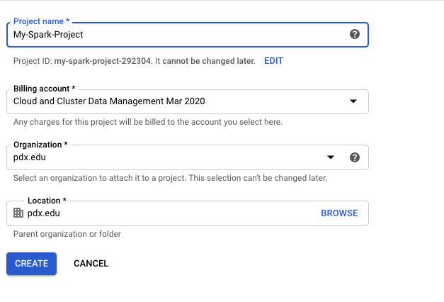
After creating the project, select Cloud Storage -> Browser from the menu
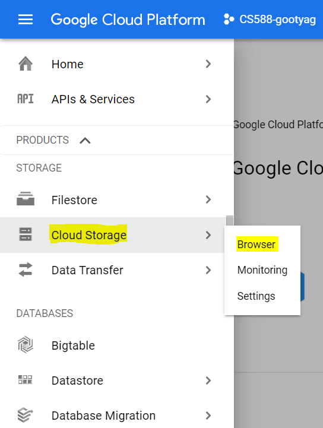
You are now displayed the Storage Browser page. Click on Create Bucket button
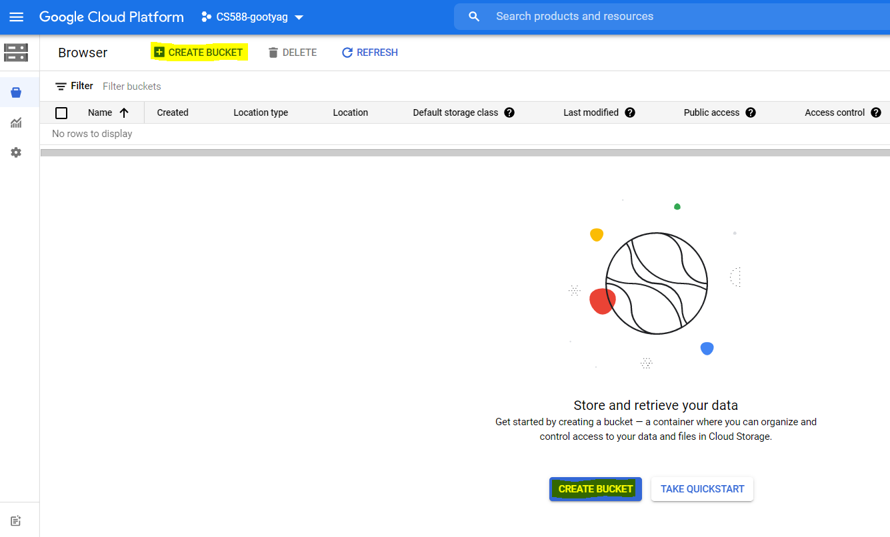
Create a bucket with the below mentioned details
- Name your bucket - spark-project-data-traffic
Note - Choose a globally unique name for the bucket, which cannot be the same as mine
- Choose where to store your data - Region
- Location - us-west1 (Oregon) or choose the region nearest to you
- The rest of the default options are fine.
- Click on
CREATEat the bottom
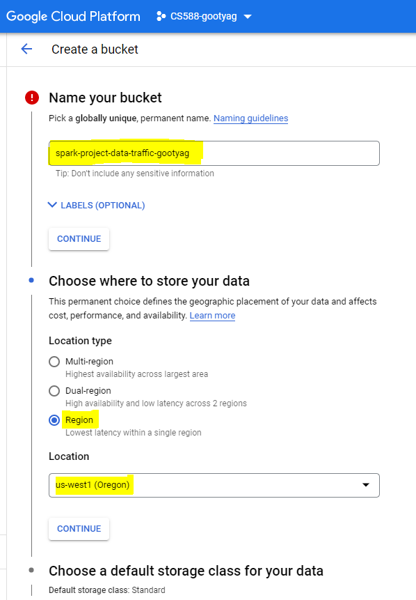
Let's create a new folder for our datasets
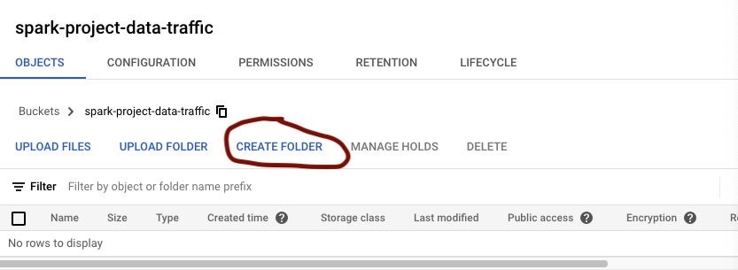
Name it datasets and click create
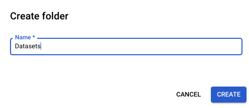
Within the datasets folder (click on datasets folder after it is created), upload the datasets that we downloaded from Portal
Note - You can upload multiple datasets at once by using Shift+Click on the dataset files while choosing
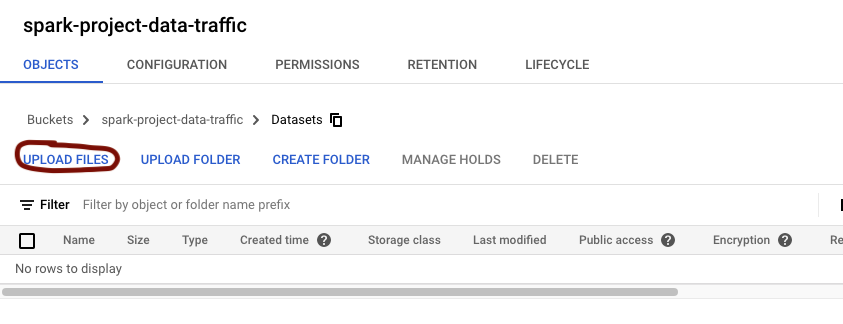
You should have the following
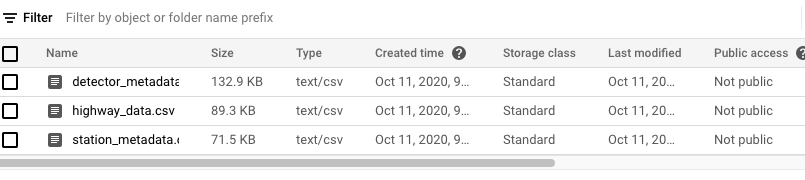
Copy and paste the following code into a .py file
# Import libraries
import pyspark
from pyspark.sql import SQLContext
from pyspark.sql import SparkSession
# Create spark context
spark = SparkSession.builder.appName('Data_Wrangling').getOrCreate()
sc = spark.sparkContext
sql = SQLContext(sc)
# Create dataframes
df_highway = (sql.read
.format("com.databricks.spark.csv")
.option("header", "true")
.load("gs://spark-project-data-traffic/Datasets/highway_data.csv"))
df_detector = (sql.read
.format("com.databricks.spark.csv")
.option("header", "true")
.load("gs://spark-project-data-traffic/Datasets/detector_metadata.csv"))
df_station = (sql.read
.format("com.databricks.spark.csv")
.option("header", "true")
.load("gs://spark-project-data-traffic/Datasets/station_metadata.csv"))
# Drop unwanted columns
df_detector = df_detector.drop("milepost", "detectortitle", "lanenumber", "agency_lane", "active_dates", "enabledflag", "detectortype","detectorclass","detectorstatus","rampid","controllerid","start_date", "end_date", "atms_id", "active_dates","locationtext")
df_station = df_station.drop("milepost","length", "numberlanes", "agencyid", "active_dates", "numberlanes","length_mid","downstream_mile","upstream_mile","agencyid", "opposite_stationid","segment_geom","station_geom","start_date","end_date","detectortype","agency","region","active_dates","id","station_location_id","detectorlocation","upstream","downstream")
# Rename a column so that the joins will match on that column
df_detector = df_detector.withColumnRenamed('detectorid', 'detector_id'))
# Join the dataframes
df_first = df_highway.join(df_detector, on=['detector_id'], how='full')
# Drop highwayid to avoid duplicate
df_first = df_first.drop("highwayid")
# Join to get the final result
df = df_first.join(df_station, on=['stationid'], how='full')
# Show the result
df.show()
# Convert to CSV
df.coalesce(1).write.option("header", "true").csv("gs://spark-project-data-traffic/Datasets/processed_data.csv")
The comments in the code explain what each line of code is doing. It will take all three datasets, remove the unnecessary attributes, join the datasets, and then convert the newly cleaned dataset into a CSV file.
Note - Make sure to change the paths in the code with your paths for the datasets. Also make sure to change the bucket name in three places in # Create dataframes section of python code and in one place in # Convert to CSV section of the python code
Upload the .py file to the Datasets folder:
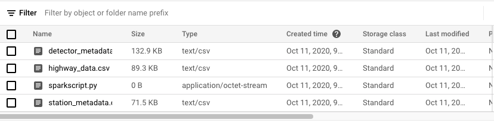
You should now have the three datasets and a python script in the Datasets folder.
In the search bar at the top of the page, enter Dataproc and select the first option:
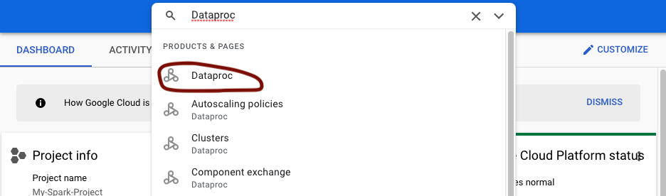
Then click on Create Cluster (you will have to enable the API on the next page if prompted to do so):
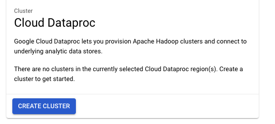
Enter a name for the cluster and select a region and zone nearest you. The rest of the default options are fine. If you leave the default options as is, then you will have two machines total to run the python script. You can increase this by increasing the number of nodes to whatever you wish but two for this example is plenty.
The cluster creation will take some time. Once finished, you can open a new tab (from the cluster name) and select the VM INSTANCES tab and see that three new instances were created (a primary node and two worker nodes in this case):
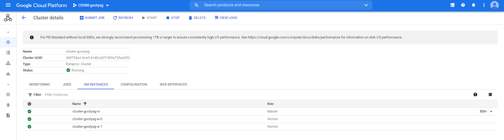
Back on the clusters page, click on the name of your cluster
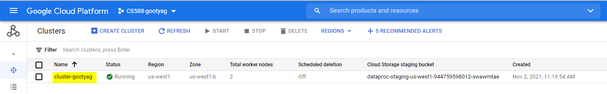
At the top, click on Submit Job
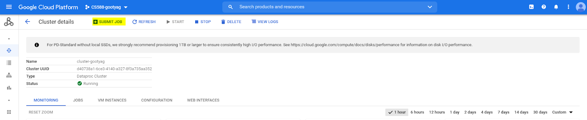
Enter in the following in the fields remember to use your unique path name to the python script
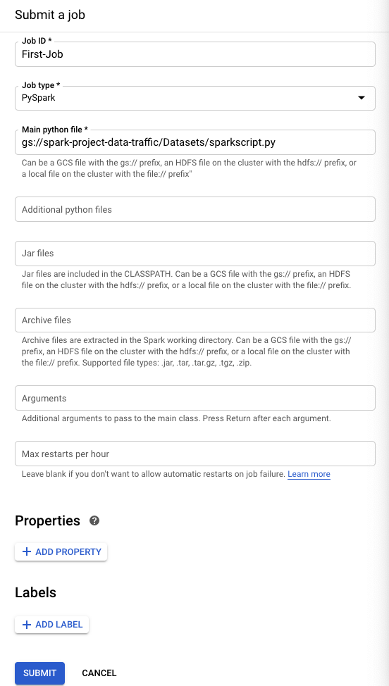
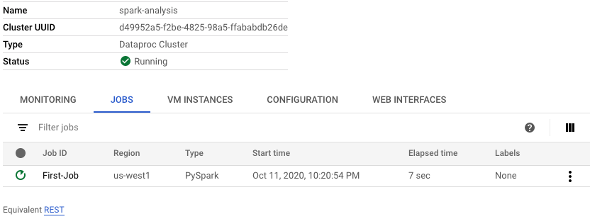
Then click SUBMIT. If your job is successful, then you should get the following output
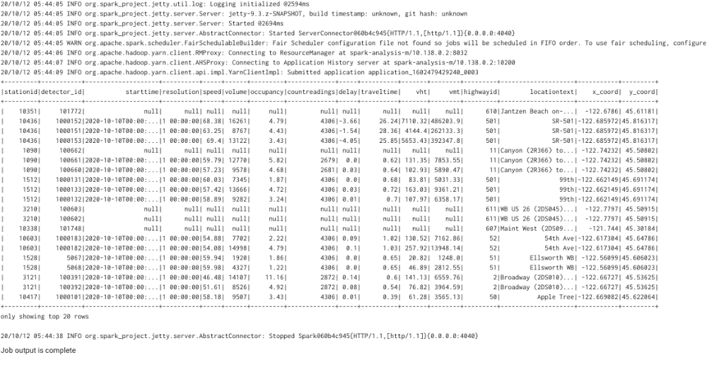
To get our new CSV file, we will head back over to Cloud Storage
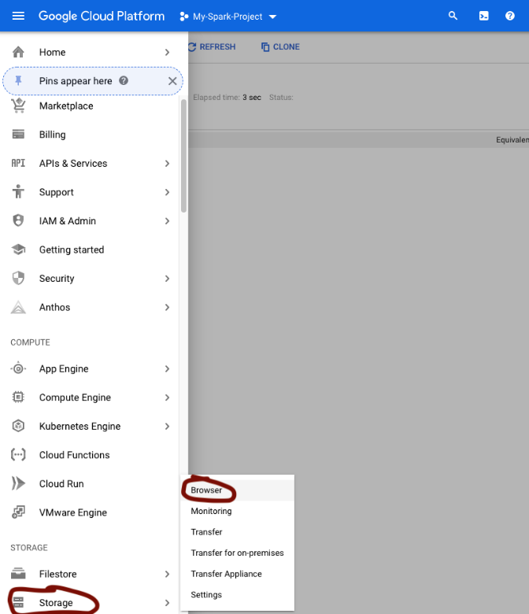
You should see the following folder
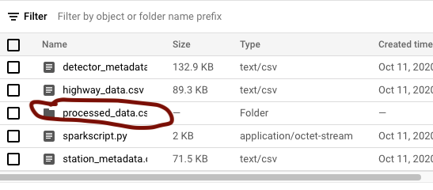
Go into the folder and click on the following file
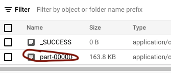
Then click on Download
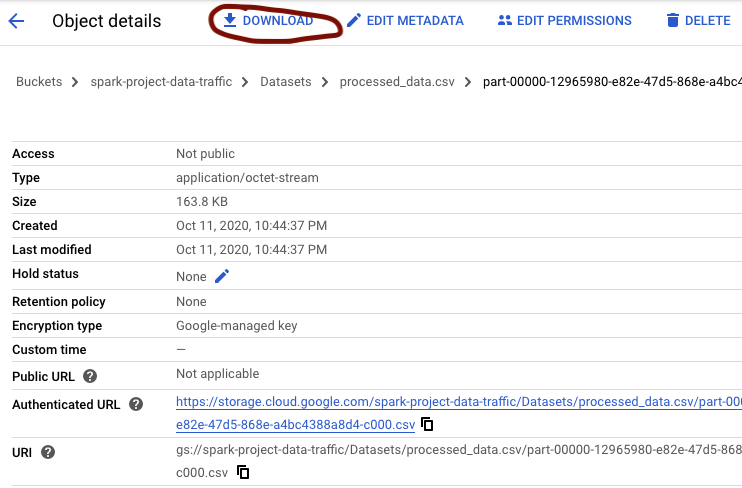
You can rename the file to something shorter such as "Processed_Dataset.csv" when you download it. You should have the following csv file:
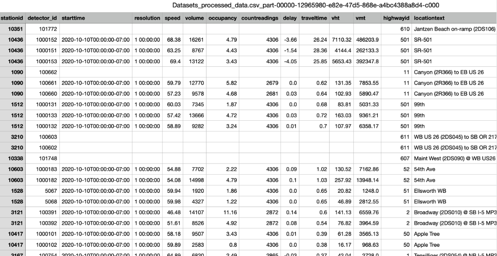
You have now taken "dirty data" from a data archive and preprocessed the data through a cluster of machines using Apache Spark to clean the data and join it into one csv file. You can now use this csv file to do data analysis such as the following:
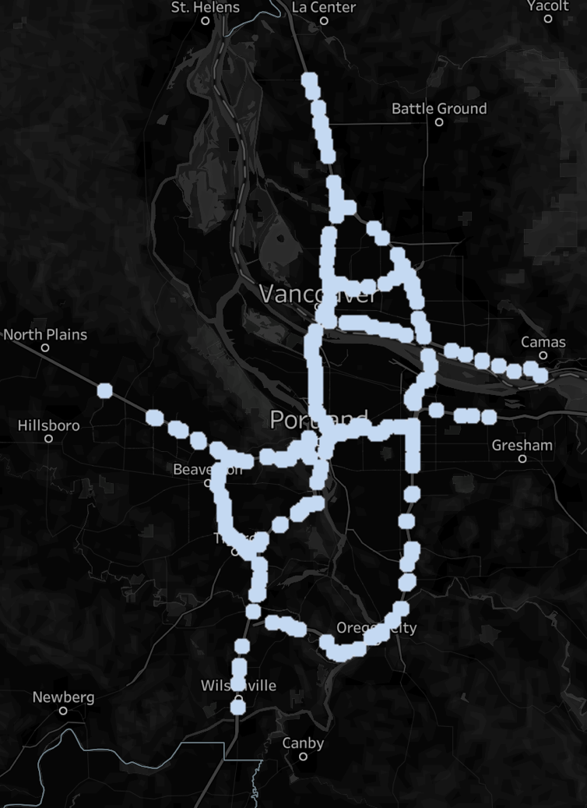
Using a data visualization tool, we can use the newly created dataset that now has the highway data information along with the coordinates to map out the traffic.
Go to the following service
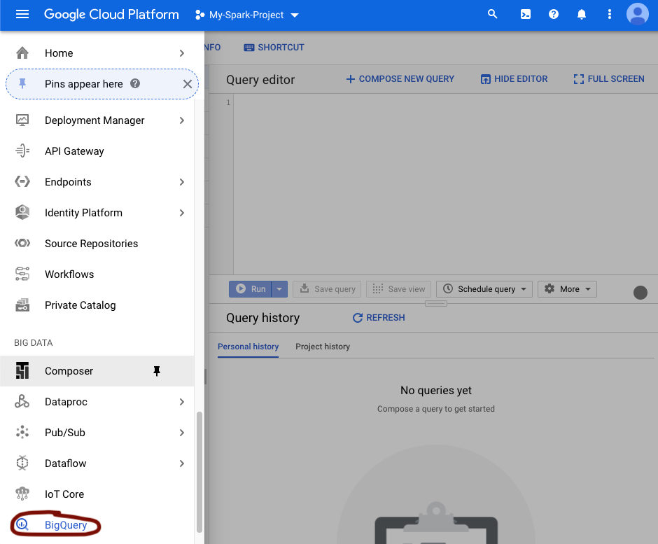
Click on your project id
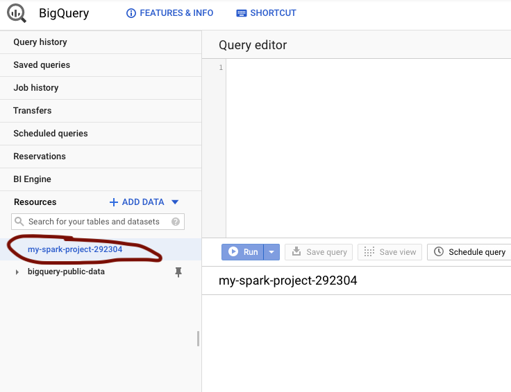
Create a new dataset
Click on Create Dataset
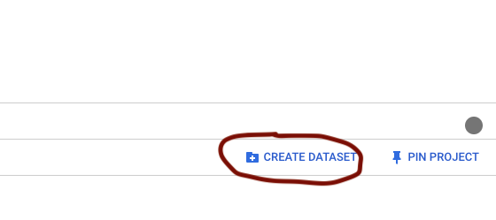
Fill in the information
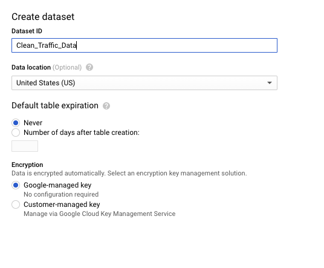
Create a new table
Once Clean_Traffic_Data is created, you can expand your project folder to select it. Then you can create a table.
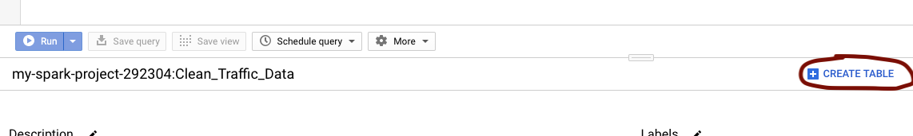
You can then fill in the following
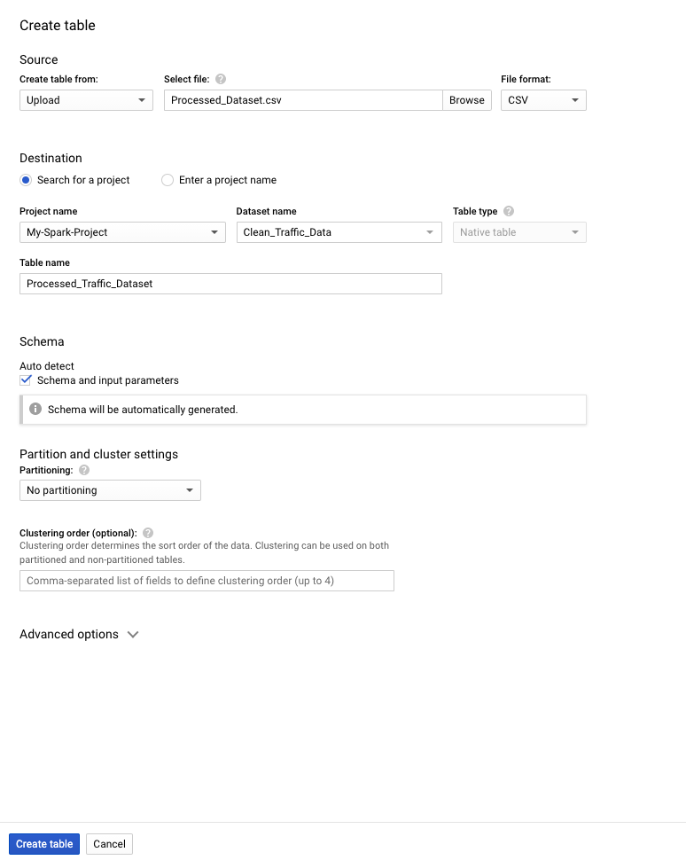
You can upload the file like I did or just choose the source path from the Cloud Storage since the processed file is there as well. Click Create table once finished.
You should now see something like this
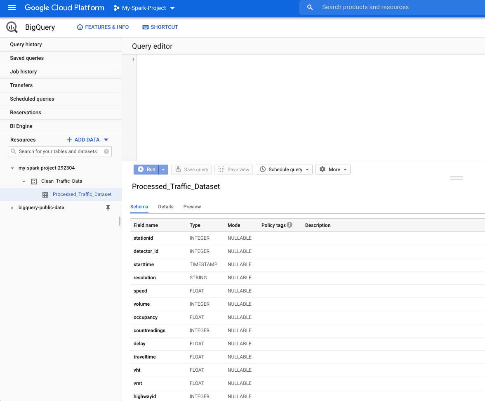
Running the following query will give us the average speed at stationid 1035:

Once you are all done Delete the storage bucket in Cloud Storage -> Browser Delete the Dataproc Cluster Delete the Datasets in BigQuery
There is also a possibility to Stop and Start the cluster, if you want to come and work on it later, without getting VM charges.
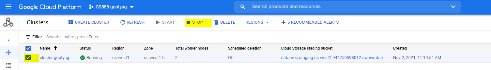